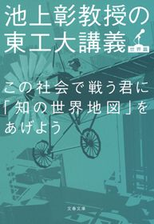
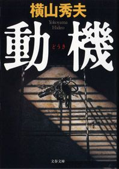
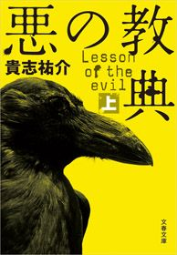

| 2015文藝春秋電子書籍ベスト100【文春e-Books】 | |
| Unknown | |
＊ この電子書籍は横書きでレイアウトされています。
＊読む際のご注意、お断り等についてはこちら をお読み下さい。
はじめに
2015年は、文藝春秋電子書籍編集部にとって刺激的な年でした。
６月に電子化された、又吉直樹さんの『火花』は、芥川賞受賞を受けて大ヒット。発売３ヶ月で、10万ダウンロードを超え、文藝春秋の電子書籍として最大のダウンロード数を更新し続けています。
電子書籍化リクエストを多数いただいていた、村上春樹作品の電子化も実現しました。８月の『走ることについて語るときに僕の語ること』を皮切りに、12月には小説としては初の電子化となる『色彩を持たない多崎つくると、彼の巡礼の年』が発売になりました。これは、文春のみならず、電子書籍業界にとって、エポックメイキングな出来事です。
また、文春の誇る『週刊文春』『Number』の電子版も今年から始まりました。
そんな2015年の「文藝春秋電子書籍ベスト100」を集めたのが本書です。
小説あり、ノンフィクションあり、電子オリジナルコンテンツありとバラエティにとんでいます。
文藝春秋は、新刊の全点電子書籍化を目指しています。
その目標に徐々に近づいていますが、既刊本の電子化、電子書籍化されていない作家の方々との話し合い等、まだまだやるべきことはたくさんあります。
この１年の勢いをそのままに、電子書籍の活性化をさらに目指していきたいと考えています。
2015年12月 文藝春秋電子書籍編集部
注意事項
●このランキングは2015年１年間の全ての電子書店の電子書籍売上を集計したものが基になっています。
●『竜馬がゆく』『鬼平犯科帳』等のシリーズ作品、上下巻が複数ランキングに入っている場合、１冊のみを表示している場合があります。
● のアイコンをクリックすると、その書籍の商品詳細頁に飛びます
のアイコンをクリックすると、その書籍の商品詳細頁に飛びます
2015 文藝春秋 電子書籍ベスト100
2015 Bungeishunju e-books Best 100
1
 火花
火花
 又吉直樹
又吉直樹
配信開始日 2015/6/11

【第153回芥川賞受賞作】
笑いとは何か、人間とは何かを描ききったデビュー小説
売れない芸人徳永は、師として仰ぐべき先輩神谷に出会った。そのお笑い哲学に心酔しつつ別の道を歩む徳永。二人の運命は。
2
64（ロクヨン）（上）
横山秀夫
配信開始日 2015/2/6
警察職員二十六万人、それぞれに持ち場がある。刑事など一握り。大半は光の当たらない縁の下の仕事。神の手は持っていない。それでも誇りは持っている。一人ひとりが日々矜持をもって職務を果たさねば、こんなにも巨大な組織が回っていくはずがない。Ｄ県警は最大の危機に瀕する。警察小説の真髄が、人生の本質が、ここにある。
3
イニシエーション・ラブ
乾 くるみ

配信開始日 2007/9/20
「必ず二回読みたくなる」と絶賛された傑作ミステリー。僕がマユに出会ったのは、人数が足りないからと呼びだされた合コンの席。理系学生の僕と、歯科衛生士の彼女。夏の海へのドライブ。ややオクテで真面目な僕らは、やがて恋に落ちて......。甘美で、ときにほろ苦い青春のひとときを瑞々しい筆致で描いた青春小説──と思いきや、最後から二つめのセリフ（絶対に先に読まないで！）で、本書はまったく違った物語に変貌してしまう。
4
その女アレックス
ピエール・ルメートル／橘明美・訳
配信開始日 2014/11/28
英国推理作家協会賞を受賞した大逆転サスペンス。貴方の予想はすべて裏切られる！
おまえが死ぬのを見たい──男はそう言って女を監禁した。檻に幽閉され、衰弱した女は死を目前に脱出を図るが......。ここまでは序章にすぎない。孤独な女の壮絶な秘密が明かされるや、物語は大逆転を繰り返し、最後に待ち受ける慟哭と驚愕へと突進する。「この作品を読み終えた人々は、プロットについて語る際に他の作品以上に慎重になる。それはネタバレを恐れてというよりも、自分が何かこれまでとは違う読書体験をしたと感じ、その体験の機会を他の読者から奪ってはならないと思うからのようだ」（「訳者あとがき」より）。未曾有の読書体験を、貴方もぜひ！
5
日本のいちばん長い日（決定版） 運命の八月十五日
半藤一利
配信開始日 2001/7/20
近代日本の"運命の一日"を描いた不朽の名作。太平洋戦争を終結させるべく、天皇の「聖断」に従い和平への努力を続ける首相鈴木貫太郎をはじめとする人々と、徹底抗戦を主張して蹶起せんとした青年将校たち──。玉音放送を敢行しようとする政府関係者に対して、陸軍の一部軍人は近衛連隊を率いて皇居に乱入した。そのあまりにも対照的な動きこそ、この一日の長さを象徴するものであった。玉音放送が流れた昭和二十年八月十五日正午に至る一昼夜に繰り広げられた二十四幕の人間ドラマ。
6
イスラーム国の衝撃
池内 恵
配信開始日 2015/1/28
謎の「国家」の正体に迫る
イスラーム国はなぜ不気味なのか？ どこが新しいのか？ 組織原理、根本思想、資金源、メディア戦略から、その実態を明らかにする。
7
民王
池井戸 潤
配信開始日 2014/8/1
夢かうつつか、新手のテロか？ 総理と息子の非常事態が発生。「お前ら、そんな仕事して恥ずかしいと思わないのか。目をさましやがれ！」漢字の読めない政治家、酔っぱらい大臣、揚げ足取りのマスコミ、バカ大学生が入り乱れ、巨大な陰謀をめぐる痛快劇の幕が切って落とされた。総理の父とドラ息子が見つけた真実のカケラとは!? 謎が謎をよぶ、痛快政治エンタメ！
8
あの戦争と日本人
半藤一利

配信開始日 2014/4/4
歴史とは、前の事実を踏まえて後の事実が生まれてくる一筋の流れである──明治維新、日露戦争、統帥権、戦艦大和、特攻隊。悲劇への道程に見える一つ一つの事実は、いつ芽吹き、誰の思いで動き出したのか。ベストセラー『昭和史』『幕末史』と並ぶ、わかりやすく語り下ろした戦争史決定版！ 日本人の心に今もひそむ「熱狂」への深い危惧が胸に迫る。
9
スクラップ・アンド・ビルド
羽田圭介
配信開始日 2015/8/7
「早う死にたか」
毎日のようにぼやく祖父の願いをかなえてあげようと、
ともに暮らす孫の健斗は、ある計画を思いつく。
日々の筋トレ、転職活動。
肉体も生活も再構築中の青年の心の内は、衰えゆく生の隣で次第に変化して......。
閉塞感の中に可笑しみ漂う、新しい家族小説の誕生！
10
打ちのめされるようなすごい本
米原万里
配信開始日 2014/12/5
「ああ、私が10人いれば、すべての療法を試してみるのに」。2006年に逝った著者が、がんと闘いつつ力をふり絞って執筆した「私の読書日記」（週刊文春連載）に加え、1995年から2005年まで10年間の全書評を収録した最初で最後の書評集。ロシア語会議通訳、エッセイスト、作家として56年の生涯を走り抜けた米原万里を知るには必読の一冊。この本には、彼女の才気とユーモアが詰まっています。
11
新・戦争論 僕らのインテリジェンスの磨き方
池上 彰／佐藤 優
配信開始日 2014/12/19
領土・民族・資源紛争、金融危機、テロ、感染症......。これから確実にやってくるサバイバルの時代を生き抜くためのインテリジェンスを伝授する１冊！ 「イスラム国の正体」「分裂する中国」から「岐路に立つ日本」まで、宗教、民族、歴史から読み解く対談集。
12
株価暴落
池井戸 潤
配信開始日 2014/8/1
織田裕二主演で2014年10月からWOWOWで放送される連続ドラマ「株価暴落」原作本がついに電子書籍化！ 巨大スーパー・一風堂を襲った連続爆破事件。企業テロを示唆する犯行声明に株価は暴落、一風堂の巨額支援要請をめぐって、白水銀行審査部の板東は企画部の二戸と対立する。一方、警視庁の野猿刑事にかかったタレコミ電話で犯人と目された男の父は、一風堂の強引な出店で自殺に追いこまれていた。「銀行の存在を賭けた戦い」をめぐる傑作金融エンタテイメント。
13
オレたちバブル入行組
池井戸 潤

配信開始日 2013/8/2
話題沸騰のドラマ『半沢直樹』（堺雅人主演）原作！ バブル期に大手銀行に入行し、今は大阪西支店融資課長の半沢直樹。支店長の命令で無理に融資の承認を取り付けた会社が倒産した。すべての責任を半沢に押しつけようと暗躍する支店長。四面楚歌の半沢に残された手は債権回収しかない──。夢多かりし新人時代は去り、気がつけば辛い中間管理職。しかも入行以来いいことなしのバブル世代。しかし嘆いてばかりじゃ始まらない。顔を上げろ、プライドを捨てるな、そのうち負け分を取り戻してやる！ 働く者すべての勇気を奮い起こさせる痛快エンターテインメント。
14
池上彰のこれが「世界のルール」だ！
池上 彰
配信開始日 2015/3/27
平和は終わった！
「イスラム国」からピケティ「21世紀の資本」まで、
大困難の時代に必要な50の知識
「日本が攻撃対象であることを名指しされる時代になりました。
過去ののどかで平和な時代は終わりを告げたかのように見えます。
では、どうすればいいのか。
まずは「敵」を知ることです。
歴史から現代が見えてくるのです。」──「はじめに」より
池上さんが「渦中の人」となった朝日新聞問題や川上量生さんとのスペシャル対談も収録！
15
オレたち花のバブル組
池井戸 潤
配信開始日 2013/8/2
絶好調ドラマ『半沢直樹』（堺雅人主演）原作本第２弾！ 東京中央銀行のバブル入行組・半沢直樹に押しつけられた「頭取命令」──それは巨額損失を出した老舗ホテルの再建。銀行内部の見えざる暗躍、金融庁の「最強の検査官」との対決。出向先での執拗ないじめ。次から次へと襲い来る逆境を、半沢はおのれの正義で迎え撃つ。オレたちは絶対に負けられない。まとめて面倒みてやる。やられたら倍返しだ！ "バブル組"の男たちのプライドが胸を熱くさせる。
16
最後の晩餐
開高 健
配信開始日 2002/7/20
「腹のことを考えない人は、頭のことも考えない」。Ｓ・ジョンソン博士のこの痛烈深遠な格言にみちびかれてくりひろげられる、古今無類、かつて試みられたことのなかった食談の名品。いにしえの王者の食卓をも凌駕する絢爛なフランス料理、賢者の知恵を凝縮したかのような中華の精進料理、さらには究極の内臓料理、はては人肉嗜食にいたるまで、食の諸相、その愉悦、その深淵、その極北をあますところなく描き尽した。情熱、体験、描写......いまだ凌駕されざる巨人・開高健の一冊。
17
国境（上）
黒川博行
配信開始日 2015/1/23
「疫病神」コンビこと、建設コンサルタントの二宮と二蝶会幹部の桑原は北朝鮮に飛んだ。二宮は重機の輸出で、桑原は組の若頭がカジノ建設の投資話でそれぞれ詐欺に遭い、企んだ男を追ってのことだった。平壌に降り立った二人だが、そこには想像以上に厳しい現実と監視が待っていた。シリーズ最高傑作の呼び声高い超大作！
18
かばん屋の相続
池井戸 潤

配信開始日 2014/8/1
働く男たちの愛憎、葛藤を描いた文春文庫オリジナル短編集。池上信用金庫に勤める小倉太郎。その取引先「松田かばん」の社長が急逝した。残された二人の兄弟。会社を手伝っていた次男に生前、「相続を放棄しろ」と語り、遺言には会社の株全てを大手銀行に勤めていた長男に譲ると書かれていた。乗り込んできた長男と対峙する小倉太郎。父の想いはどこに？ 表題作他、五編収録。
19
捏造の科学者 STAP細胞事件
須田桃子
配信開始日 2015/1/16
誰が、何を、いつ、なぜ、どのように捏造したのか？ このままの幕引きは科学ジャーナリズムの敗北だ。
「須田さんの場合は『絶対に来るべき』」
はじまりは生命科学の権威、笹井氏から記者に届いた一通の案内メールだった。「iPS細胞を超える発見」と喧伝する理研の記者会見に登壇したのは、若き女性科学者・小保方晴子氏。発見の興奮とフィーバーに酔っていた取材班に、疑問がひとつ、またひとつ増えていく。「科学史に残るスキャンダルになる」──STAP細胞報道をリードし続けた毎日新聞科学環境部。その中心となった女性科学記者が事件の深層を書き下ろした！
20
高速の罠 アナザーフェイス６
堂場瞬一
配信開始日 2015/3/10
大友鉄の一人息子・優斗が行方不明に──
父を訪ねて高速バスに乗った優斗は移動中に忽然と姿を消してしまう。誘拐か事故か!? 張り巡らされた罠はあまりに大胆不敵だった。
100万部突破の大人気シリーズ、大友鉄が新たなステージに！
21
その日のまえに
重松 清

配信開始日 2010/2/20
余命の告知を受けた妻と、新婚時代のアパートを訪ねる僕たち...「その日のまえに」。妻の最期を、二人の息子とともに見届ける「その日」。妻が亡くなった病院の看護師さんから、ある日、お目にかかりたい、と連絡がきた...「その日のあとで」。消えゆく命を前にして、いったい何ができるのだろうか──。死と向かいあう人々の切なくもけなげな姿を描き、幸せの意味をみつめる連作短篇集。"王様のブランチ"で「BOOK大賞」を受賞した涙の感動作！
22
葉桜の季節に君を想うということ
歌野晶午

配信開始日 2010/10/20
こと女に関してはからっきし意気地のない後輩・キヨシに拝み倒されて、南麻布の愛子嬢の屋敷を訪ねたのが事件の発端だった──。なんでもやってやろう屋・成瀬将虎は悪質な霊感商法事件に巻き込まれ、一方では運命の女・麻宮さくらとのデートもこなさなければならず大忙し。果たして事件は無事解決するのか、そして将虎とさくらの恋の行方は？ 素人探偵の元に持込まれた事件の意外な顛末、そして......!? 最後の一ページまで目が離せない、本格スピリットに満ちた長篇。
23
この社会で戦う君に「知の世界地図」をあげよう 池上彰教授の東工大講義
池上 彰

配信開始日 2015/3/13
東京工業大学の教授に就任した池上彰さん。理系学生への講義の内容が一冊に。「悪い会社・優れた経営者の見分け方」「なぜ優秀な理系学生がオウム真理教に？」「君ならサムスンに移籍するか？」「日本国憲法は改正すべきか」「リーマン・ショックとは何だったのか」「君は年金に入るべきか」「なぜ反日運動が起きるのか」etc.知るべきことを分かりやすく。ビジネスマンも必読です。
24
キャプテンサンダーボルト
阿部和重／伊坂幸太郎
配信開始日 2014/11/28
2015年本屋大賞候補作！
人生に大逆転はあるのか？
小学生のとき、同じ野球チームだった二人の男。
二十代後半で再会し、一攫千金のチャンスにめぐり合った彼らは、
それぞれの人生を賭けて、世界を揺るがす危険な謎に迫っていく。
東京大空襲の夜、東北の蔵王に墜落したB29と、
公開中止になった幻の映画。そして、迫りくる冷酷非情な破壊者。
すべての謎に答えが出たとき、動き始めたものとは──
現代を代表する人気作家ふたりが、
自らの持てる着想、技術をすべて詰め込んだエンターテイメント大作。
25
動機
横山秀夫

配信開始日 2013/10/25
『６４』で話題沸騰！ 横山秀夫の警察小説の原点！
署内で一括保管される三十冊の警察手帳が紛失した。犯人は内部か、外部か？ 男たちの矜持がぶつかりあう。表題作（第53回日本推理作家協会賞受賞作）ほか、女子高生殺しの前科を持つ男が、匿名の殺人依頼電話に苦悩する「逆転の夏」。地方新聞の警察担当記者が主人公の「ネタ元」、公判中の居眠りで失脚する裁判官を描いた「密室の人」、珠玉の四篇を収録。
26
世界を変えた10冊の本
池上 彰

配信開始日 2014/3/14
『聖書』の基礎を知ることで見えてくる歴史の流れとは？ 革命の原動力となった『資本論』の論理とは？ 『コーラン』『種の起源』『アンネの日記』あるいはケインズ、フリードマンの経済書まで、世界に大きな影響を与えた10冊の本を池上さんが厳選、その内容をわかりやすく紹介するとともに、歴史的意義を解き明かします。私たちが生きる現代を形作っている思想や、日々メディアで報じられている国際問題の源泉がこの1冊でわかる！
27
陰の季節
横山秀夫

配信開始日 2013/10/25
『６４』で話題沸騰！ 横山秀夫「D県警シリーズ」はここから始まった！
警察一家の要となる人事担当の二渡真治は、天下りポストに固執する大物OBの説得にあたる。にべなく撥ねつけられた二渡が周囲を探るうち、ある未解決事件が浮かび上がってきた......。「まったく新しい警察小説の誕生」と選考委員の激賞を浴びた第５回松本清張賞受賞作を表題作とするD県警シリーズ第一弾！ 表題作他、「地の声」「黒い線」「鞄」の短篇四篇を収録。
28
シャイロックの子供たち
池井戸 潤
配信開始日 2013/8/2
「半沢直樹」シリーズのドラマ化で大ブレイクした著者が、「ぼくの小説の書き方を決定づけた記念碑的な一冊」と語る本作。とある銀行の支店で起きた現金紛失事件。女子行員に疑いがかかるが、別の男が失踪!? "叩き上げ"の誇り、格差のある社内恋愛、家族への思い、上がらない成績......事件の裏に透ける行員たちの人間的葛藤。銀行という組織を通して、普通に働き、普通に暮らすことの幸福と困難さを鮮烈に描いた傑作群像劇。
29
私の男
桜庭一樹

配信開始日 2010/9/20
私は腐野花（くさりの・はな）。着慣れない安いスーツを身に纏ってもどこか優雅で惨めで、落ちぶれた貴族のようなこの男の名は淳 悟 。私の男、そして私の養父だ。突然、孤児となった十歳の私を、二十五歳の淳悟が引き取り、海のみえる小さな街で私たちは親子となった。物語は、アルバムを逆からめくるように、花の結婚から二人の過去へと遡ってゆく。空虚を抱え、愛に飢えた親子が冒した禁忌、許されない愛と性の日々を、圧倒的な筆力で描く直木賞受賞作。
30
青春を山に賭けて
植村直己
配信開始日 2002/1/20
植村直己はいかにして冒険家になり、いかにして「世界のウエムラ」になったか？ ひとりの腕白少年が、大学へ進んで美しい山々と出会い、無一文で日本を脱出、ヨーロッパに渡りアルバイトをしながら、ついに五大陸最高峰のすべてに登頂を果たす。さらには南極大陸単独横断という目標めざして、アマゾンのイカダ下りなど過酷なまでの試練に次々と挑戦する──。大自然の中の「何か」に挑まずにはいられなかった冒険家が、みずからの型破りな青春を語り尽した感動篇。
31
ショッピングの女王
中村うさぎ
配信開始日 2003/3/20
「それ、いただくわ」高級ブティックでこの恍惚のセリフを口にするため、住民税滞納もためらわないトンデモない女。それが中村うさぎだ。金がなくても買いまくる。あまりにも華奢で美しく、履くと足が豚足になるディオールのパンプス、よく見たらマタギのチャンチャンコそっくりのフェンディの毛皮、高級椅子に下剤にエロ・グッズまで、うさぎの冒険はつづく。借金地獄の果てに、命より大切なカルティエの時計を質入して、払った利子が90万円......他人の失敗談はなぜこんなに面白い!?
32
臆病者のための株入門
橘 玲
配信開始日 2013/5/10
初心者のためのやさしい株入門決定版！ 「こんなに親切に説明してあって役に立つ株の本はないと思います」と著者自らが太鼓判を押す。なぜって、商売がらみで書かれたり語られたりする投資の本の中にあって、ニュートラルな立場から、合理的に、人生設計の中で、株や投資を位置づけているから。ふつうの人でも、あらゆる株必勝法のインチキを見破り、カモられずにお金を増やす方法を徹底して追究しています。ちょっとクールで、かなり知的。画期的な株入門書の誕生です。株をやらないつもりの人でもやりたくなる？
33
壊れたおねえさんは、好きですか？
中村うさぎ
配信開始日 2007/6/20
とりあえず仕事も収入もある。女友だちもライフパートナーもいる。ただいま40代半ば。うさぎ女王様に足りないもの、それは性的魅力だった！ 男ぎらい→ホストクラブ通い→モテたい！と公言→15歳年下のホストにハマる→プチ整形→本格整形で美人に。フェロモンやレイプ妄想やオナニーや老け専についての考察。「ダメ男好き」は自傷嗜癖？ 六本木ＳＭバーの夜、何が起きた？ ......この本は、女王様がジタバタと悪あがきした１年間の輝かしい記録である。
34
潜入ルポ ヤクザの修羅場
鈴木智彦
配信開始日 2011/7/20
怖くて誰も書けなかった、これが「暴力団の虚像と実像」！ 新宿歌舞伎町の通称・ヤクザマンションに事務所を構え、西成の賭場に単独で潜り込み、ヒットマンの壮行会に列席...著者の日常はまるで"東映ヤクザ映画の世界"。警察が山口組の弱体化目的でナンバー２と３を逮捕した2010年の「頂上作戦」以降、組はますます潜行し正体が見えづらくなった。しかし「殺すぞ」などの脅迫にも怯まず15年、暴力団専門ライターとしてヤクザと寝食を共にしてきた経験がここに結実！
35
チェ・ゲバラ伝 増補版
三好 徹
配信開始日 2014/4/11
１冊でたどる「チェ・ゲバラ」の生涯
南米アルゼンチンの裕福な家に生まれ、医師になるも、貧困と圧政と腐敗の覆う現実を憂い、キューバ革命へと身を投じたチェ・ゲバラ。彼はどのように生き、どのように死んだのか。いまなお全世界で語られる伝説の男、ゲバラを描いた不朽の傑作評伝に、さらに判明した事がらを書き加えた増補最新版。
36
黒魔術の手帖
澁澤龍彦
配信開始日 2009/11/20
ローマ法王が魔術に手を染めていた？ 大哲学者・デカルトでさえも入れてもらえなかった薔薇十字団って？ 悪魔礼拝の秘儀に、ルイ14世の愛妾モンテスパン公爵夫人もハマっていた？ 妖術師や時の権力者らが虜になったカバラ、タロット、黒ミサ、自然魔法など黒魔術の数々。その精神性をひも解き、ヨーロッパの神秘思想の歴史的系譜を、澁澤龍彦が日本に初めて紹介。三島由紀夫に「殺し屋的ダンディズムの本」と嘆賞された、オカルト・ブームの先駆的エッセイ集！
37
燃えよ剣（上）
司馬遼太郎
配信開始日 2014/6/27
新選組副長、土方歳三を描いた司馬遼太郎の代表作が、ついに電子書籍で登場。無類の面白さが貴方を待ち受ける。これぞ小説だ！
不世出の小説家、司馬遼太郎さんには幕末に材を求めた作品がいくつもあります。そのなかで『竜馬がゆく』とともに特別な支持を集めてきたのがこの『燃えよ剣』。武州から出てきた土くさい田舎剣士、土方歳三。天然理心流四代目の剣豪、近藤勇と出会ったとき、歳三の人生、そして幕末史は回転し始める。近藤局長、土方副長の体制で本格始動した京都守護職配下の新選組。沖田総司、永倉新八、斎藤一ら凄腕の剣客が京都の街を震撼させる。池田屋事件などを経て、新選組とともに歳三の名もあがっていくが──。激動する時代のさなかで剣のみを信じ、史上類例を見ない強力な軍事組織をつくりあげた男の生涯を、練達の筆で熱く描きます。
38
東慶寺花だより
井上ひさし
配信開始日 2013/6/14
井上ひさしが十年をかけて紡いだ、感動の遺作！ 江戸時代、女たちが不幸な結婚から逃れるための「駆け込み寺」であった鎌倉の東慶寺。その門前に建つ御用宿の居候で、戯作者志望の青年の目を通し、救いを求めて寺に身を寄せる女たちの物語が描かれる。ただ虐げられるばかりではない。怒り、抵抗し、許し、受け入れる。名もなき人々の弱さと強さを優しい視線で見つめた井上文学の到達点とも言うべき、静かな感動に満ちた連作短篇集。著者自身による特別講義を巻末収録。
39
竜馬がゆく（一）
司馬遼太郎

配信開始日 2013/6/21
総発行部数2500万部超！ 坂本竜馬の奇蹟の生涯を壮大なスケールで描く、司馬文学の金字塔、遂に電子化！
土佐の郷士の次男坊に生まれながら、ついには維新回天の立役者となった坂本竜馬の奇蹟の生涯を、激動期に生きた多数の青春群像とともに壮大なスケールで描きあげる。司馬遼太郎の永遠のベストセラーが半世紀の時を経て、電子版で新たによみがえる！
第１巻／生まれ落ちたときから背中一面に旋毛がはえていたため、豪気な父は、"千里の駿馬"になるかもしれないと、竜馬と名付けた。が、十二になっても寝小便する。近所の子から「坂本の寝小便ったれ」「坂本の泣き虫」 とからかわれ泣かされて帰ってくる。字を満足に覚えられず、寺子屋の師匠に見捨てられる。そんな竜馬は、十四歳の時に小栗流の道場に通いはじめてから、にわかに顔つきまで変わっていった。竜馬は強い──。幼年時代から、江戸での剣術修業、奥手だった青年時代、人斬り以蔵、桂小五郎との出会いなどを描くシリーズ第１作
40
世に棲む日日（一）
司馬遼太郎
配信開始日 2014/12/12
2015年のNHK大河ドラマ『花燃ゆ』の主人公は久坂玄瑞の妻、文 。文の兄であり玄瑞の師である吉田松陰こそ、『世に棲む日日』前半の中心人物です。「人間が人間に影響をあたえるということは、人間のどういう部分によるものかを、松陰において考えてみたかった。そして後半は、影響の受け手のひとりである高杉晋作という若者について書いた」（「文庫版あとがき」より）
嘉永六（1853）年、ペリー率いる黒船が浦賀沖に姿を現して以来、攘夷か開国か、勤王か佐幕かをめぐり、国内には激しい政治闘争の嵐が吹き荒れていた。この時期、骨肉の抗争を経て倒幕への主動力となった長州藩には、その思想的原点に立つ松下村塾主宰・吉田松陰と、後継者たる高杉晋作がいた──。維新前夜の青春群像を活写した怒濤の歴史長編、ここに開幕。
41
教科書に載ってないUSA語録
町山智浩
配信開始日 2013/4/12
「週刊文春」人気コラムを１冊に。新聞、テレビ、ウェブでは分からない超大国アメリカの素顔とは。現地在住の著者が、「日本人の知らないアメリカ語」ともいうべき名言、失言、流行語から読み解きます。イーストウッド監督の「今、アメリカはハーフタイムなんだ」との言葉に、自信を失ったアメリカ国民はみな涙を流したとか。連載でおなじみの澤井健さんによるギャグセンスあふれるイラストも収録。まさに町山ワールド全開ともいうべき、１級のアメリカ批評本です。
42
銀漢の賦
葉室 麟
配信開始日 2012/2/20
二十年を経て、身分を遥かにへだてた男たちの友情は復活するのか？ 江戸の寛政期、西国の小藩である月ヶ瀬藩の郡方・日下部 源五と、名家老と謳われ、南画の名手としても幕閣にまで名声が届いている松浦将 監 。幼なじみで、同じ剣術道場に通っていた二人は、ある出来事を境に、進む道が分かれ、ながく絶縁状態となっていた。ともに五十歳をこえて二人の路が再び交差する時、運命が激しく動き出す。松本清張賞受賞の傑作時代小説。
43
死神の精度
伊坂幸太郎

配信開始日 2008/3/20
こんな人物が身近に現れたら、彼／彼女は死神かもしれません──（１）ＣＤショップに入りびたり（２）苗字が町や市の名前と同じ（３）会話の受け答えが微妙にずれていて（４）素手で他人に触ろうとしない。１週間の調査の後、死神は対象者の死に「可」「否」の判断を下し、「可」ならば翌８日目に死は実行される。ただし、病死や自殺は除外。まれに死神を感じる人間がいる。──クールでどこか奇妙な死神・千葉が出会う、６つの人生。金城武主演で映画化された原作です！
44
「空気」の研究
山本七平
配信開始日 2013/6/7
昭和期以前の人びとには「その場の空気に左右される」ことを「恥」と考える一面があった。しかし、現代の日本では"空気"はある種の"絶対権威"のように驚くべき力をふるっている。あらゆる論理や主張を超えて、人びとを拘束するこの怪物の正体を解明し、日本人に独得の伝統的発想、心的秩序、体制を探った名著。1983年刊行の超ロングセラー！
45
内閣官房長官・小山内和博 電光石火
濱 嘉之
配信開始日 2015/1/30
これは本当にフィクションなのか──。警視庁公安部出身の著者が、内閣官房長官を主人公に徹底的なリアリティで官邸を描く！ 情報を制するものが権力を制す。それが官房長官・小山内和博の哲学だ。総理のイスをめぐる権力闘争、水面下で蠢くスキャンダル、国際テロ組織による宣戦布告......。相次ぐ政権の危機をどう乗り切るのか。「警視庁公安部・青山望」シリーズを手掛ける著者が、極限のリアリティで官邸を描く新感覚エンターテイメント。あの青山望も登場！
46
羽生善治 闘う頭脳
文藝春秋・編
配信開始日 2015/3/24
1996年２月、史上初の七タイトル独占を達成。
通算タイトル獲得90期（史上１位）。
1991年以降24年にわたり、少なくとも一冠以上を保持。
通算対局数500超、通算勝率７割超の双方を満たす唯一の棋士。
──将棋棋士、羽生善治さんが打ち立ててきた記録の一端です。
1970年生まれの44歳。1985年プロデビューし、現役30年目を迎えている羽生さんは、2015年３月現在、名人、王位、王座、棋聖の四冠を保持しています。30代がピークといわれている将棋界にあって、これは驚異的なことです。
闘いへのモチベーションを失わず、強くあり続けている彼の発する言葉は、将棋の枠には収まりきらない深い含蓄に満ちています。
本書は、羽生さんの全面協力のもと、新規ロングインタビュー、作家・沢木耕太郎さんとの対談を中心に、各誌が掲載してきた記事を五つのキーワードで分類し、構成しました。
ここには、ビジネスにも役立つ「羽生流」の発想のヒントが詰まっています。
【主な内容】
巻頭ロングインタビュー 勝つための６つのプロセス
特別語り下ろし対談 「考える力」と「捉える力」 ×沢木耕太郎
「覚える」と「発想する」のスイッチを切り替える
勝負の分かれ目は序盤にあり
対談 眠っていた力が目覚めるとき ×小川洋子
若い世代に勝ち続ける思考法
47
本気になればすべてが変わる 生きる技術をみがく70のヒント
松岡修造
配信開始日 2015/3/6
本気で喜んだことがありますか。本気で怒ったことがありますか。〈本気〉になってはじめて人生は楽しくなる。〈修造流〉人生術70のヒント！
48
セカンド・ラブ
乾 くるみ
配信開始日 2012/8/17
1983年元旦、僕は、会社の先輩から誘われたスキー旅行で、春香と出会った。やがて付き合い始めた僕たちはとても幸せだった。そこに春香とそっくりな女、美奈子が現れるまでは......。清楚な春香と大胆な美奈子、対照的な二人の間で揺れる、僕の心。ラストで読者を驚愕の淵へと叩き込む、恋愛ミステリー。ベストセラー『イニシエーション・ラブ』に続く、二度読み必至の傑作！
49
臆病者のための億万長者入門
橘 玲
配信開始日 2014/6/20
株を始めるならこの１冊、という信用を得てロングセラーとなった『臆病者のための株入門』から８年。『臆病者のための裁判入門』に続き、シリーズ第３弾が出ました！
今回は株だけではありません。宝くじ、年金、生命保険、株、投資信託、為替、不動産......。「年金崩壊」「国家破産」等々不安が尽きない時代にどうすれば「虎の子」を守れ、増やせるのか？ あなたの疑問にすべて答えます。「億万長者になるのは簡単だ」「宝くじを買う人は資産運用に成功できない」「資産運用の面から見ればマイホームはおすすめできない」「高金利の通貨は長期的には安くなる」など、読み進めるうちに今まで抱いてきた常識が著者の明晰な論理によってガラガラと崩れさります。不安で先行きの見えない時代だからこそ知っておきたい「資産運用の常識」が詰まった一冊です。
50
イスラム国 テロリストが国家をつくる時
ロレッタ・ナポリオーニ／村井章子・訳／池上 彰・解説
配信開始日 2015/1/26
対テロファイナンス専門のエコノミストとして、「史上初めてテロリストが国家をつくることに成功するかもしれない」と早くから「イスラム国」に注目・発言していた著者が放つ、まったく新しい角度からの「イスラム国」論！
アルカイダの失敗は、アメリカというあまりに遠い敵と第二戦線を開いたことにあった......バグダッド大学で神学の学位を取った男、バグダディはそう考えた。複雑な代理戦争を繰り広げるシリアという崩壊国家に目をつけた彼は、国をつくることを目指した。領土を獲得し、石油を確保し、電力をひき、食料配給所を儲け、予防接種までおこなう。その最終目標は「失われたイスラム国家の建設」だという──。池上彰氏による解説付き。
51
クライマーズ・ハイ
横山秀夫

配信開始日 2006/10/20
1985年、御巣鷹山で日航機が墜落。その日、北関東新聞の古参記者・悠木は同僚の元クライマー・安西に誘われ、谷川岳に屹立する衝立岩に挑むはずだった。未曾有の事故。全権デスクを命じられ、約束を違えた悠木だが、ひとり出発したはずの安西はなぜか山と無関係の歓楽街で倒れ、意識が戻らない。「下りるために登るんさ」という謎の言葉を残して──。若き日、新聞記者として現場を取材した著者みずからの実体験を昇華しきった、感動あふれる壮大な長編小説。
52
対岸の彼女
角田光代

配信開始日 2008/3/20
いじめで群馬に転校してきた女子高生のアオちんは、ナナコと親友になった。専業主婦の小夜子はベンチャー企業の女社長・葵にスカウトされ、ハウスクリーニングの仕事を始める。立場が違ってもわかりあえる、どこかにいける、と思っていたのに......結婚する女、しない女、子供を持つ女、持たない女、たったそれだけのことで、なぜ女どうし、わかりあえなくなるんだろう。女性の友情と亀裂、そしてその先を、切なくリアルに描く傑作長編。第132回直木賞受賞作。
53
走ることについて語るときに僕の語ること
村上春樹
配信開始日 2015/8/28
走ることについて語りつつ、小説家としてのありよう、創作の秘密、そして「彼自身」を初めて説き明かした画期的なメモワール。
54
クックパッドのこの裏ワザがすごい！ 料理がもっと楽に、おいしくなる101の魔法
監修 クックパッド株式会社
配信開始日 2014/11/21
月間利用者数がのべ4493万人（2014年７月末）、レシピ数が180万品を超える日本最大のレシピ投稿・検索サイト「クックパッド」。そこに寄せられた数々のレシピの中から、料理を手早く、楽に、経済的に作ることをかなえる裏ワザ101個を厳選。ズボラ魂が生んだ衝撃の大根の皮むき法、ゆで卵を短時間で、しかもツルン！と仕上げる方法、安いお肉をジューシーに変身させる超簡単下ごしらえ術などなど、家庭のキッチンから生まれた誰にでも実践でき、効果絶大の裏ワザが満載です。試したら、なぜ今までこのワザを知らなかったのかと感心すること請け合いです。
55
武士道ジェネレーション
誉田哲也
配信開始日 2015/7/31
「よく観ておけ、......これが、あたしの武士道だ」
剣道女子二人の「武士道」サーガついに完結。早苗が結婚。そして道場閉鎖の危機に、香織が立ち上がる。二人と道場の行く末はいかに。
56
ビッグデータ・コネクト
藤井太洋
配信開始日 2015/4/10
いま、そこにある個人情報の危機を描く警察小説
公立図書館の私企業との提携を進めるエンジニアが誘拐された。サイバー犯罪捜査官とはぐれ者ハッカーのコンビが個人情報の闇に挑む。
57
世界情死大全 「愛」と「死」と「エロス」の美学
桐生 操
配信開始日 2009/1/20
「死体の皮膚で女装した男」「死体を抱ける店」「人肉食事件」「早すぎた埋葬」「ユニークな自殺方法」「皇帝に殉教した美少年奴隷」など、信じられない仰天エピソードが満載。男同士の嫉妬から服毒死させられたロンメル将軍、火炙りの上に秘所までさらされたジャンヌ・ダルク、奔放な性生活を記録していたトルストイ、大富豪でありながら完全に隠遁したハワード・ヒューズ、何度殺しても斃れなかった怪僧ラスプーチンなど、有名人の「性と死」の逸話もたっぷり。
58
ヒトのオスは飼わないの？
米原万里
配信開始日 2014/12/5
ロシア語通訳、エッセイスト、作家として多忙な日々を送った故・米原万里さんは、常に複数の猫と犬の母でもありました。そのニギヤカなる毎日を描いたエッセイが本書。執筆時、米原家は猫４匹、犬２匹、人間ふたりのメンバー構成でした。その状況を恩師に年賀状で報告したところ、「ネコイヌもいいけれどねえ、君、そんなことより、早くヒトのオスを飼いなさい、ヒトのオスを!!」と言われた......というのがタイトルの謂れです。ヒトのオスにはちと厳しいが、猫と犬には惜しみない愛情を注いだ米原さんの傑作ペット・エッセイ。猫好きも犬好きも楽しめます！
59
イン・ザ・プール
奥田英朗

配信開始日 2006/7/20
体調不良のはずが水泳中毒に、ケータイがないと冷や汗がでる、勃起して、ずーっとそのまま直らない。藁をもつかむ思いで訪れた神経科で患者たちを待っていたのは──とてつもなくヘンな医者だった！ カバと見まごう巨体を揺らし、度外れた好奇心で患者の私生活に踏み込み、やりたい放題。でもなぜか病は快方へ......？ 続篇『空中ブランコ』で直木賞受賞、現代世相の病理をコミカルかつ軽妙な筆致で描き出す。精神科医・伊良部の突出した存在感が笑いを招く！
60
11/22/63（上）
スティーヴン・キング／白石 朗・訳
配信開始日 2015/4/17
このミステリーがすごい！ 2014年版海外編第1位
週刊文春ミステリーベスト10 2013年海外部門第1位
巨匠がまたもや代表作を生み出してみせた！
過去へ旅することのできる「扉」の存在を知った男はケネディ暗殺阻止に挑む。キングにしか書けない壮大な物語。落涙保証の感動大作！
61
戦後70年記念企画 半藤一利・佐藤優 初対談 あの戦争を知るために今こそ読むべき本はこれだ！ 【文春e-Books】
週刊文春編集部・編
配信開始日 2015/6/10
「週刊文春」で話題を呼んだ読書企画を完全電子化！ 半藤一利氏と佐藤優氏の初対談も収録。敗戦から70年目の夏がくる。年々戦争体験者が減る一方、世界に硝煙が消えることはない。わが国の周辺にもキナ臭さが漂う今だから、過去に学ぶ意味は高まる。戦火に追われた経験を知り、国家の失敗の本質を探る。明日のために読むべし！ 怒涛の54冊徹底ガイド。
【目次】
半藤一利×佐藤優 初対談 今こそ読むべき14冊はこれだ！戦争文学
悲惨な体験が書かせた傑作群 浅田次郎
天皇 戦勝にこだわった皇太后 原武史
陸軍 異質な時代の異質な軍事集団 保阪正康
海軍 ＯＢを激怒させた徹底検証 戸高一成
真珠湾攻撃 米英の策略にハマったのか？ 春名幹男
ビルマ戦 「大東亜戦争」の生の記録 古処誠二
戦時下の日常 衣食住、価値観を蝕むもの 中島京子
外交 成功か？ 失敗か？ 戸部良一
慰安婦 事実を見据えるために 秦郁彦
戦争と女性 銃後で遊郭で、翻弄された姿 梯久美子
特攻 生き残った者の苦悩 門田隆将
戦略爆撃 日本から始まった「空爆の時代」 安冨歩
兵士 神から犠牲者へ 一ノ瀬俊也
沖縄戦 極限状況を追体験する 又吉栄喜
62
旅行者の朝食
米原万里

配信開始日 2007/7/20
その名を聞いただけでロシア人なら皆いっせいに笑い出す「旅行者の朝食」というヘンテコな缶詰や、数十年前たった一口食べただけなのに今も忘れられない魅惑のトルコ蜜飴の話、はたまたロシアの高級輸出品キャビアはなぜ缶詰でなく瓶詰なのかについての考察や、わが家を建てる参考にとはるばる神戸の異人館を見に行くも、いつのまにか食べ歩きツアーになっていたエピソードなど、ロシア語通訳として有名な著者が身をもって体験した、誰かに話したくなる食べ物話が満載です！
63
まほろ駅前多田便利軒
三浦しをん
配信開始日 2009/6/20
「ここも一応、東京なんだがな」と言われてしまう"まほろ市"は、東京のはずれの大きな町だ。まほろ駅前で、ひとり便利屋を営む多田啓介のもとに、高校の同級生・行天春彦が転がりこんだ。高校時代、教室でただ１回しか口を開かなかった、ひょろ長い変人だ。ペットあずかりに子どもの塾の送迎、納屋の整理...ありふれた依頼なのに、行天が来てからは、やたらきな臭い状況に追い込まれるハメに。さて、本日のご依頼は？ 多田・行天の魅力が全開の、第135回直木賞受賞作。
64
ゆるめる力 骨ストレッチ
松村 卓
配信開始日 2015/8/28
30秒でラクになる！いま最も注目される革命的ストレッチ
「骨ストレッチ」とは、筋肉ではなくて骨の使い方を知ることで身体と心をラクにしていくメソッドです。日本代表クラスのトップアスリートからアマチュアまで多くのスポーツ選手が実践し、いま大きな注目を集めています。
それも、筋トレのような激しい動作をする必要は一切ありません。老若男女、誰にでも簡単にできて、効果は抜群！重要なのは、
力を入れることよりも、力を抜くこと。
身体を固めることより、ゆるめること。
「骨ストレッチ」を実践すると、短時間で身のこなしが軽やかになり、肩こりや腰痛、膝痛からも解放されます。また、少々無理をしても疲れがたまりにくくなるので、毎日を心地よく過ごせるようにもなっていきます。
本書では、これまでアスリート向けの著書を上梓してきた著者が、はじめて一般向けに、既存のトレーニングの常識を覆す独自のメソッドをわかりやすく紹介します。
65
鬼平犯科帳（一）
池波正太郎

配信開始日 2009/9/20
斬り捨て御免の権限を持つ、江戸幕府の火 付 盗 賊 改 方 の長官・長谷川平蔵。その豪腕ぶりは、盗賊たちに"鬼の平蔵"と恐れられている。しかし、その素顔は「妾腹の子」として苦労をし、義理も人情も心得ている。昔は大いに遊び、放蕩無頼の限りを尽くしたことも。テレビに舞台に、人気絶大の鬼平シリーズ第一巻は「唖の十蔵」「本所・桜屋敷」「血頭の丹兵衛」「浅草・御厩河岸」「老盗の夢」「暗剣白梅香」「座頭と猿」「むかしの女」を収録。
66
「ドイツ帝国」が世界を破滅させる 日本人への警告
エマニュエル・トッド／堀 茂樹・訳
配信開始日 2015/7/3
冷戦終結と欧州統合が生み出した「ドイツ帝国」。EUとユーロは欧州諸国民を閉じ込め、ドイツが一人勝ちするシステムと化している。ウクライナ問題で緊張を高めているのもロシアではなくドイツだ。かつての悪夢が再び甦るのか？
67
未来の働き方を考えよう 人生は二回、生きられる
ちきりん
配信開始日 2015/11/10
年金受給開始年齢の引き上げ、定年の延長など、働き方をめぐる環境は近年驚くべきスピードで変化し続けている。そんな現代日本にあって、あなたは20代で選んだ仕事を70代まで続けるの？ 月間200万PVをほこる人気ブロガーちきりんが「人生を二回生きる」働き方を具体的に提案する人生論。文庫版の解説、柳川範之東大教授による「明るい働き方を実現するための指南書」も収録。
〈序章〉 "働き方本"ブームが示すモノ
〈第一章〉現状維持の先にある未来
〈第二章〉世界を変える3つの革命的変化
〈第三章〉新しい働き方を模索する若者たち
〈第四章〉「ふたつの人生を生きる」
〈第五章〉求められる発想の転換
〈終章〉 オリジナル人生を設計するために
68
悪の教典（上）
貴志祐介

配信開始日 2012/8/3
晨 光 学院町田高校の英語教師、蓮実聖司はルックスの良さと爽やかな弁舌で、生徒はもちろん、同僚やＰＴＡをも虜にしていた。しかし彼は、邪魔者は躊躇なく排除する共感性欠如の殺人鬼だった。学校という性善説に基づくシステムにサイコパスが紛れこんだとき──。ピカレスクロマンの輝きを秘めた戦慄のサイコホラー傑作。
69
ナイルパーチの女子会
柚木麻子
配信開始日 2015/3/28
丸の内の大手商社に勤めるやり手のキャリアウーマン・志村栄利子（30歳）。実家から早朝出勤をし、日々ハードな仕事に勤しむ彼女の密やかな楽しみは、同い年の人気主婦ブログ『おひょうのダメ奥さん日記』を読むこと。決して焦らない「おひょう」独特の価値観と切り口で記される文章に、栄利子は癒されるのだ。その「おひょう」こと丸尾翔子は、スーパーの店長の夫と二人で気ままに暮らしているが、実は家族を捨て出て行った母親と、実家で傲慢なほど「自分からは何もしない」でいる父親について深い屈託を抱えていた。
偶然にも近所に住んでいた栄利子と翔子はある日カフェで出会う。同性の友達がいないという共通のコンプレックスもあって、二人は急速に親しくなってゆく。ブロガーと愛読者......そこから理想の友人関係が始まるように互いに思えたが、翔子が数日間ブログの更新をしなかったことが原因で、二人の関係は思わぬ方向へ進んでゆく。次第にエスカレートする執着と、一方的過ぎる考えと行動の強要──とても友情とは呼べない関係に二人が陥ってしまったのは、二人が出会ってはいけない同士だったからなのか......。
「ナイルパーチ」とはスズキ目アカメ科アカメ属の淡水魚。淡白な味の食用魚だが、他の種を食べ尽くし、生態系を破壊するほどの凶暴性を持っている。「ナイルパーチ」だったのは栄利子、それとも翔子？ 「女友達がほしい」という、ただ一つの欲望が共通したことで起こる修羅場と悲劇、その破綻から再生の予兆までを描き切った長編傑作小説。
70
ドキュメント戦艦大和
吉田 満／原 勝洋
配信開始日 2000/7/20
かつて世界最強を謳われ、連合国に「幻の大戦艦」と恐れられた巨艦に何が起ったのか。名著『戦艦大和ノ最期』の著者吉田満と大和研究の第一人者原勝洋が、六十人を超える大和乗員の生存者と関係者の証言を丹念に集め、さらに日米の資料を駆使し、昭和二十年春の沖縄大和特攻作戦を再現する。「作戦準備」「作戦発動」「米攻撃隊来襲」「戦艦大和沈む」「戦いのあとに」と、五部に分けて克明に時間経過を追った本書は、無謀無策といわれた大和特攻の真実に迫る。
71
日本国憲法の二〇〇日
半藤一利
配信開始日 2014/4/4
東京大空襲で九死に一生を得た著者は疎開先、茨城県下妻を経て新潟県長岡で日本の敗戦を迎える。そのとき15歳の少年だった。そして日本は、戦後を生きる原理となる新憲法の策定作業に入る。占領政策を決めるGHQ指令が次々と発せられる中、昭和21年３月６日、ついに「憲法改正草案要綱」が閣議決定される。あの敗戦より203日。この苛酷ではあるが希望に満ちた日々を、史家の目に少年の目を織り交ぜつつ、哀切に描ききる。
72
死のドレスを花婿に
ピエール・ルメートル／吉田恒雄・訳

配信開始日 2015/4/10
『その女アレックス』の原点となる恐怖のイヤミス
狂気に駆られて逃亡するソフィー。聡明だった彼女はなぜ全てを失ったのか。悪夢の果てに明らかになる戦慄の悪意とは。驚愕の傑作。
73
シャイニング（上）
スティーヴン・キング／深町眞理子・訳
配信開始日 2015/4/17
鬼才スタンリー・キューブリック監督による映画化作品でも有名な、世界最高の「恐怖の物語」
雪に閉ざされたホテルに棲む悪霊が、管理人一家を襲う。天才キングが圧倒的筆力で描き出す恐怖！ これこそ幽霊屋敷もの、そして20世紀ホラー小説の金字塔
74
逢沢りく（上）
ほしよりこ
配信開始日 2015/3/13
りくは中学生。おしゃれなパパと、カンペキなママ、
「オーラがある」と友だちが憧れる、ちょっと特別な存在。
美しい彼女は、蛇口をひねるように、
嘘の涙をこぼすことができた。悲しみの意味もわからずに──
『きょうの猫村さん』で老若男女の心を鷲掴みにした
ほしよりこの、傑作長編コミック！
第19回（2015年）手塚治虫文化賞「マンガ大賞」候補作！
75
コンカツ？
石田衣良

配信開始日 2015/4/3
笑いと涙の婚活エンターテインメント！
顔もスタイルも悪くないのになぜかいい男との出会いがない！ 合コンに打ち込む仲良しアラサー４人組は晴れて幸せをつかめるのか？
76
未来のことは未来の私にまかせよう 31歳で胃がんになったニュースキャスター
黒木奈々
配信開始日 2015/3/26
黒木奈々、31歳。NHK BS1「国際報道2014」のメインキャスターに抜擢され、その前途は輝かしいものに思われていた。
そんなある日、友人との食事中に突然の胃痛に襲われる。救急車で運ばれ、胃せん孔との診断で入院。しかし、それは、たんなる胃潰瘍ではなくステージ３の胃がんだった......。
セカンドオピニオンを得て、胃の全摘出を決意。同時に、自らの病名を公表し、病と戦うことを宣言する。
キャスターという立場を生かし、同年代の働く女性たちが、がんに襲われたとき、何か力になれるのではないかという信念のもとに、がん宣告のあとの心境を綴った手記が本書である。
あくまで明るく、前向きに病と闘いつつも、32歳の女性ならではの悩みはつきない。
容姿が取りざたされる職業で、果たして自分は仕事に戻れるのか。
これまでキャリアを優先してきたけれど、もう一度、誰かと恋ができるのだろうか。
結婚は？ 子どもを持つことは？
何も「あきらめない」ことを目標とする今の女性たち。その中でがむしゃらに先頭を走ってきたキャスターが突然の病に襲われたとき、何を選び、何をあきらめるのか。
揺れ動く気持ちを素直に書き記した闘病記。
77
空中ブランコ
奥田英朗

配信開始日 2008/5/20
跳べなくなったサーカスの空中ブランコ乗り。刃物はおろか机の角まで怖い尖端恐怖症のやくざ。ダンディーで権力街道まっしぐら、の義父のカツラを剥がしたくてたまらない医者。伊良部総合病院地下の神経科には、今日もおかしな患者たちが訪れる。だが色白でデブの担当医・伊良部一郎には妙な性癖が......この男、泣く子も黙るトンデモ精神科医か、はたまた病める者を癒す名医なのか!? 直木賞受賞。『イン・ザ・プール』につづく絶好調のシリーズ第２弾！
78
日本人が知らない集団的自衛権
小川和久
配信開始日 2015/3/20
中国は日本の領海でやりたい放題密漁し、虎視眈々と日本の領土を狙っている。
いまこそ日本の防衛力強化が必要なのに、安倍政権の説明を聞いても新聞やテレビをみても、「集団的自衛権」っていったい何なのか、さっぱりわからない。
集団的自衛権は本当に必要なの？ 日本は戦争に巻き込まれやすくなってしまうの？......安全保障のエキスパートである小川和久氏が、集団的自衛権の「そもそも論」を平易に解説します。
本書の最大の特徴は、Q&A方式で読者目線の素朴な疑問に答えていること。
たとえば......
Q1 なぜいま集団的自衛権が必要なんですか？
Q2 自衛隊が勝手に戦争を始めたりしませんか？
Q3 日米同盟をやめたら日本はどうなるんですか？
......こうした疑問への平易な回答を読んでいるうちに、誰でも安全保障の知識が身につくようにできています。
まさに本書だけで集団的自衛権も外交・安保も憲法もぜんぶわかる。
学習意欲に燃える高校生からビジネスマン、そして政治家も必携の作品です。
79
コーヒーもう一杯
重松 清
配信開始日 2012/6/20
19歳の頃、当時同棲中だった３歳上の彼女がバザーでコーヒーミルを買った。早速マンデリンの豆を挽き、丁寧にコーヒーを淹れてくれた。「ねえ、もう一杯お代わりしない？」何事にも想像力に乏しく幼かった僕には、昨夜帰省先から戻った彼女に訊きたくても訊けないことがあった。もやもやした気持ちで苦いコーヒーを啜っていると、彼女が「とても大切な話」を切り出した...。これは「忘れられない香り」の記憶をテーマとして競作されたアンソロジーの一篇です。
80
世界ボーイズラブ大全 「耽美」と「少年愛」と「悦楽」の罠
桐生 操
配信開始日 2013/1/18
同性愛は人類の歴史と同じくらい古い。「精液授与の行為」「家の贅沢品としての快楽の子」「美少年奴隷」「ペニスを癒す"稚魚"の少年」「男色処罰法」「容貌の劣るものを嫌った"童貞王"」「少年売春宿」「混ざり合うＳＭとＢＬ」「男性同士の天使愛」「僧侶と稚児」「江戸時代の陰間」ｅｔｃ．世界中から集めたボーイズラブ仰天エピソードの数々！
81
オカマだけどＯＬやってます。完全版（上）
能町みね子

配信開始日 2010/2/20
能町みね子、2X歳。都内の某会社でＯＬとして働き始めて３年。実は体はオトコ、つまりまだ「チン子」がついています。そして会社の人は誰もそのことを知りません...。文化祭に女装させられた楽しい高校時代。不可解だった、オトコとしての初恋。大学を出てフツーに就職したものの、暗黒のサラリーマン生活に耐え切れず、（戸籍はオトコのまま）ＯＬとなった日々を、イラスト＋エッセイで淡々とご紹介。アメーバブログで大人気を博した、新米スローＯＬライフ。
82
キング誕生 池袋ウエストゲートパーク青春篇
石田衣良

配信開始日 2014/9/5
IWGPシリーズ初の文庫書き下ろし作品が登場！ マコトの親友にして池袋の王様、タカシはいかにして「氷のキング」になったのか？
誰にだって忘れられない夏の一日があるよな──。高校時代のタカシにはたったひとりの兄、タケルがいた。スナイパーのような鋭く正確な拳をもつタケルは、みなからボスと慕われ、戦国状態の池袋をまとめていく。だが、そんな兄を悲劇が襲う。タカシが兄の仇を討ち、氷のキングになるまでを描いた特別長編。
83
マリファナも銃もバカもOKの国 言霊USA2015
町山智浩
配信開始日 2015/4/21
スラングから紐解く爆笑アメリカ裏事情！
辛口批評と痛快ギャグで日本人の知らない最新アメリカ事情をメッタ斬り。週刊文春の人気連載が一冊に。これであなたも米国通!?
84
やまない雨はない 妻の死、うつ病、それから...
倉嶋 厚
配信開始日 2004/6/20
「小春日和のような穏やかな暮らしを一変させた妻の入院、そしてあまりに唐突な末期ガン宣告。それは私にとって、すさまじい木枯らしの日々の始まりでした」。老年期のとば口でたったひとりの家族を失ない、やがて深い孤独と後悔から体調を崩し、しだいにうつ状態へと落ち込む。元ＮＨＫのお天気キャスターとして人気を博した著者が、伴侶の死、自殺未遂、精神科入院を経て回復するまでの痛切な日々を率直に語り、反響を呼んだベストセラー。
85
フラッシュ・ボーイズ 10億分の1秒の男たち
マイケル・ルイス／渡会圭子・東江一紀・訳
配信開始日 2014/10/17
これは凄い本だ！
2008年のリーマン・ショック以降、ウォール・ストリートは規制が強化され健全になった、と信じられてきたが、その規制と民主化によって、逆に市場は本当のイカサマ市場になってしまった──その事実を白日の元にさらした衝撃のノンフィクション。取引所も、SECも大手投資銀行もすべてグル。簒奪されるのは、善良な一般投資家だ！
証券市場の民主化によってニューヨーク証券取引所とNASDAQ以外の証券取引所が乱立するようになった2009年あたりから、ディーラーたちは不思議な現象に悩まされるようになった。コンピュータスクリーンが映し出す各証券市場の売値と買値で取引しようとすると、ふっと売り物や買い物が消えてしまうのだ。その値が消えて、買う場合だったら必ずそれより高い値で、売る場合だったらそれより低い値で取引が成立してしまう。ウォール・ストリートの二軍投資銀行に務めるブラッド・カツヤマは単身調査に乗り出す。するとそこには、彼らの注文を10億分の1秒の差で先回りする超高速取引業者「フラッシュ・ボーイズ」の姿があった......。
86
聞く力 心をひらく35のヒント
阿川佐和子
配信開始日 2012/7/20
「週刊文春」の名物対談「阿川佐和子のこの人に会いたい」が、連載900回を超えた。20年間で取材した各界著名人は1000人近い。が、未だにインタビューに苦手意識があるというアガワ。なぜ相手の本音を引き出すことができるのか？ 本書では、数々の失敗から会得した「『分かります』と安易に言わない」「『たとえば？』『具体的には？』は話を掘り下げるのに有効」「なぐさめの言葉は２秒後に」などの"秘訣"を、インタビュー時のエピソードとともに初披露する！
87
まほろ駅前番外地
三浦しをん
配信開始日 2012/10/12
あの愉快な奴らが帰ってきた！ 多田・行天の便利屋凸凹コンビが主人公のヒット作『まほろ駅前多田便利軒』パート２。バツイチ三十路の多田・行天ふたりの物語に加え、脇役が主人公となるスピンアウトストーリーを収録。若き地元ヤクザの星、生意気小学生の田村ほか意外な人物をフィーチャーし、痛快でどこか切なく胸に迫る人間ドラマは健在。2011年に映画化された「まほろ駅前多田便利軒」の主演コンビ、瑛太×松田龍平で2013年１月連続ドラマ化！
88
後妻業
黒川博行
配信開始日 2014/8/29
直木賞受賞第一作！ 「色で老人を喰う」裏稼業を描く戦慄の犯罪小説。
妻に先立たれた後期高齢者の耕造は、六十九歳の小夜子と同居しはじめるが、夏の暑い日に脳梗塞で倒れ、一命を取り留めるも重体に陥る。
だが、裏で小夜子は結婚相談所を経営する前科持ちの男、柏木と結託していた。
病院へ駆けつけた、耕造の娘である尚子、朋美は、小夜子の本性を次第に知ることとなる──。
結婚相談所の男と、結婚したパートナーと死別を繰り返す女につきまとう黒い疑惑。
恐るべき"後妻業"の手口と実態。
89
池袋ウエストゲートパーク
石田衣良

配信開始日 2002/5/20
ミステリーの「今」を読みたければ、池袋を読め。刺す少年、消える少女、マル暴に過激ジャーナリスト、カリスマダンサー......駅西口公園、通称ウエストゲートパークを根城にする少年少女たちが、発熱する都会のストリートを軽やかに疾走する。若者たちの現在をクールに、そして鮮烈に描く大人気シリーズの第一作。青春小説の爽快感とクライムノヴェルの危険な味わいを洗練させ、新しい世代から絶大な支持を得て話題となった連続ドラマの原作。
90
点と線
松本清張
配信開始日 2003/5/20
ミステリ好きなら名前を知らぬ人がない名作です。舞台は昭和三十年代。福岡市香椎の岩だらけの海岸で寄り添う死体が見つかったのは、汚職事件渦中にある某省課長補佐と料亭の女中。青酸カリ入りのジュース瓶がのこされ、警察ではありふれた心中事件と考えた。しかし、何かがおかしい──と福岡の老警官と東京のヒラ刑事は疑問を抱く。うたがわしい政商は事件当時、鉄道で北海道旅行中。そのアリバイは鉄壁だった──時刻表トリックの古典にして、今も瑞々しい傑作ミステリ。
91
死神の浮力
伊坂幸太郎
配信開始日 2013/10/25
おまえはまだ死なない。俺がついているから──。映画化（金城武主演）もされたベストセラー『死神の精度』の「千葉」が８年ぶりに帰ってきました！ しかも今回は長篇、冒頭の一部を除いてすべて書き下ろしです。７日のあいだ対象の人間を観察し、「可」か「見送り」を判定。「可」の場合８日目にその人間の最期を見届ける......。人間界でひっそりとこんな仕事をしている死神の千葉。クールでとぼけた彼のちょっとテンポのずれた会話と、誠実な仕事ぶりをたっぷりお楽しみください。
92
時の罠
辻村深月／万城目学／湊かなえ／米澤穂信
配信開始日 2015/6/19
辻村深月、万城目学、湊かなえ、米澤穂信──。
綺羅、星のごとく輝く人気作家たちによる、"時"をテーマにしたアンソロジー。
小学校時代に埋めたタイムカプセルがほどくこじれた関係、配置換えになった「縁結び」の神様の新たな仕事、人類には想像もつかない悠久なる物語......。
"時間"が築いたきらびやかな迷宮へ、ようこそ──。
93
アンネの日記 増補新訂版
アンネ・フランク／深町眞理子・訳
配信開始日 2014/6/27
「アンネは、死んでも私たちの心の中に生き続けているのです。そして、世界の歴史を変える存在になりました」（池上彰『世界を変えた10冊の本』より）
ユダヤ系ドイツ人の少女アンネが、ナチスの「ユダヤ人狩り」から逃れるため家族と共に二年間潜んだアムステルダムの"隠れ家"。彼女はそこで、架空の友人キティーに宛てて日記を綴りました。戦後、残された父オットー・フランクにより編集・公表されたこの「アンネの日記」は各言語に翻訳され、2009年にはユネスコ世界記憶遺産にも登録されました。わが国も同様で、1952年に「光ほのかに」のタイトルで文藝春秋より刊行されて以来、綿々と読み継がれています。
実は、アンネの綴った日記は二種類あります。アンネが自分のためだけに書いたものと、後の公開を期して清書したもの。そのふたつを編集し直した〈完全版〉をもとに、さらに1998年に発見された5ページ分を加えたのが本書〈増補新訂版〉です。尋常ではない環境の中で、13歳から15歳という思春期を過ごした少女の夢と悩みが、より瑞々しく蘇り、私たちの胸を打ちます。平和を愛し、誰かを愛するすべての人に改めて贈る、永遠不滅の一冊です。
94
路
吉田修一
配信開始日 2015/5/22
台湾でも大反響！ 国を越え、溢れる想い
台湾に日本の新幹線が走る！ 巨大プロジェクトに、それぞれの国の人々の個々に抱いてきた想いが繋がる。確かな手触りの感動傑作！
95
壬生義士伝（上）
浅田次郎

配信開始日 2002/12/20
小雪が舞う一月の夜更け、大坂・南部藩蔵屋敷に、傷だらけの侍がたどり着いた。貧しさゆえ南部藩を脱藩し、壬 生 浪 と蔑称された新選組の隊士になった、吉村貫一郎であった。その剣の冴えは"人斬り貫一"と京の都で恐れられ、一方、極度の倹約のため守銭奴と蔑まれた男には、まったく異なる貌もあった。元新選組隊士や教え子たちが語る非業の隊士の生涯から、血なまぐさい時代にひとすじに生きた「誠」の人生が浮びあがる。03年映画公開。浅田次郎、渾身の名作！
96
さよなら神様
麻耶雄嵩
配信開始日 2014/10/31
隣の小学校の先生が殺された。容疑者のひとりが担任の美旗先生と知った俺、桑町淳は、クラスメイトの鈴木太郎に真犯人は誰かと尋ねてみた。殺人犯の名前を小学生に聞くなんてと思うかもしれないが、鈴木の情報は絶対に正しい。鈴木は神様なのだから──(「少年探偵団と神様」)。衝撃的な展開と後味の悪さでミステリ界を震撼させた神様探偵が帰ってきた。
97
憎悪のパレード 池袋ウエストゲートパーク11
石田衣良
配信開始日 2014/7/14
マコトに、Gボーイズにまた会える！
第10作『PRIDE』で第1シーズンを終えた「池袋ウエストゲートパーク」シリーズが三年半ぶりに再稼働。池袋の果物屋兼トラブルシューター、マコトが戻ってきました。今作でも合法ドラッグ、パチンコ依存、仮想通貨、情報商材などまさに今、火を噴いている問題がテーマとなっていますが、なかでもヘイトスピーチを扱った表題作から伝わる憎悪の空気は圧巻。進化するトラブルから池袋を守るために、マコトとGボーイズはどうたたかうのか──。シリーズお馴染みのキャラクターたちも総登場。贅沢な一冊です。
98
若冲
澤田瞳子
配信開始日 2015/4/24
奇才の画家・若冲が生涯挑んだものとは──
緻密すぎる構図や大胆な題材、新たな手法で周囲を圧倒した天才は、底知れぬ悩みを抱え、姿を見せぬ好敵手を憎みながら描き続けた。
99
週刊文春でAKBのスクープを連発して"文春砲"とか呼ばれているらしい記者が、AKB総選挙の日にニコ生に出て、○○○○のこととか××××のこととか裏話をけっこうヤバいレベルで暴露したらしいので、それをまとめて載せてみた件。【文春e-Books】
文春砲＆Ｂ子
配信開始日 2015/6/25
2015年6月6日に行われた「第7回AKB総選挙」。約3万2千人の観衆を集めた福岡ヤフオクドームで、指原莉乃が史上最多得票で１位となり、返り咲きを決めた。
その総選挙結果発表と同時進行でニコニコ生放送でオンエアされたのが「"文春砲"記者出演！ AKB48総選挙ウラ実況」である。文春砲とはこれまで、指原莉乃、前田敦子、柏木由紀、松井珠理奈、峯岸みなみなど、数々のAKBスキャンダルを仕留めてきた週刊文春のスクープ記者・スズキのこと。
いつしか、ネットで「文春砲」と恐れられるようになったスズキ記者が、アイドルを主人公にした朝井リョウさんの新作『武道館』の担当で、文春一のAKBファンの女性編集者とともにアイドルのすべて、記事では書けなかった話、取材の裏話、AKBの秘密を大暴露！
述べ3千人が訪れ、話題を集めた放送をまとめたのが本書だ。巻末には、ボーナストラックとして放送後日談「スズキ記者がニコ生では言い足りなかったこと」を収録。もちろん、総選挙後に週刊文春に載ったあのメンバーの「スキャンダル」にも触れています。文春砲またまたキター！
※本コンテンツは2015年6月6日にニコニコ生放送で放送された「"文春砲"記者出演！ ＡＫＢ48総選挙ウラ実況」の内容を再構成したものです。
同放送で画像として紹介された「週刊文春」の記事や一部写真は収録しておりません。
100
とっぴんぱらりの風太郎
万城目 学
配信開始日 2013/12/20
【電子特別版】関が原の戦いから12年、天下は豊臣から徳川へ──。伊賀を追い出され、京でぼんくらな日々を送る"ニート忍者"風太郎。その人生は、１個のひょうたんとの出会いを経て、奇妙な方向へと転がっていく。やがて迫る、ふたたびの戦乱の気配。だましだまされ、斬っては斬られ、燃えさかる天守閣を目指す風太郎の前に現れたものとは？ マイペース忍者、美貌の忍び、かぶき者の頭目、謎の貴人......さまざまなキャラクターが織りなす驚きに満ちたクライマックス、その舞台は、難攻不落の大坂城！ 『鴨川ホルモー』『鹿男あをによし』『プリンセス・トヨトミ』など、奇想天外な作品を世に送り出してきた著者初の時代小説にして、マキメワールド全開のスペクタクル大大大長編！ 「週刊文春」連載時の挿絵100枚超を特別収録した、電子スペシャルバージョンです。

【あ行】
阿川佐和子
浅田次郎
『壬生義士伝（上）
』
阿部和重／伊坂幸太郎
『キャプテンサンダーボルト
』
アンネ・フランク／深町眞理子・訳
『アンネの日記 増補新訂版
』
池井戸 潤
『民王
』
池井戸 潤
『株価暴落
』
池井戸 潤
『オレたちバブル入行組
』
池井戸 潤
『オレたち花のバブル組
』
池井戸 潤
『かばん屋の相続
』
池井戸 潤
『シャイロックの子供たち
』
池内 恵
『イスラーム国の衝撃
』
池上 彰
池上 彰
『この社会で戦う君に「知の世界地図」をあげよう 池上彰教授の東工大講義
』
池上 彰
『世界を変えた10冊の本
』
池上 彰／佐藤 優
池波正太郎
『鬼平犯科帳（一）
』
伊坂幸太郎
『死神の精度
』
伊坂幸太郎
『死神の浮力
』
石田衣良
『コンカツ？
』
石田衣良
石田衣良
『池袋ウエストゲートパーク
』
石田衣良
乾 くるみ
『イニシエーション・ラブ
』
乾 くるみ
『セカンド・ラブ
』
井上ひさし
『東慶寺花だより
』
植村直己
『青春を山に賭けて
』
歌野晶午
エマニュエル・トッド／堀 茂樹・訳
小川和久
奥田英朗
『イン・ザ・プール
』
奥田英朗
『空中ブランコ
』
【か行】
開高 健
『最後の晩餐
』
角田光代
『対岸の彼女
』
監修 クックパッド株式会社
『クックパッドのこの裏ワザがすごい！ 料理がもっと楽に、おいしくなる101の魔法
』
貴志祐介
『悪の教典（上）
』
桐生 操
桐生 操
『世界ボーイズラブ大全 「耽美」と「少年愛」と「悦楽」の罠
』
倉嶋 厚
黒川博行
『国境（上）
』
黒川博行
『後妻業
』
黒木奈々
『未来のことは未来の私にまかせよう 31歳で胃がんになったニュースキャスター
』
【さ行】
桜庭一樹
『私の男
』
澤田瞳子
『若冲
』
重松 清
『その日のまえに
』
重松 清
『コーヒーもう一杯
』
司馬遼太郎
『燃えよ剣（上）
』
司馬遼太郎
『竜馬がゆく（一）
』
司馬遼太郎
『世に棲む日日（一）
』
澁澤龍彦
『黒魔術の手帖
』
週刊文春編集部・編
『戦後70年記念企画 半藤一利・佐藤優 初対談 あの戦争を知るために今こそ読むべき本はこれだ！ 【文春e-Books】
』
鈴木智彦
『潜入ルポ ヤクザの修羅場
』
須田桃子
スティーヴン・キング／白石 朗・訳
『11/22/63（上）
』
スティーヴン・キング／深町眞理子・訳
『シャイニング（上）
』
【た行】
橘 玲
『臆病者のための株入門
』
橘 玲
ちきりん
辻村深月／万城目学／湊かなえ／米澤穂信
『時の罠
』
堂場瞬一
【な行】
中村うさぎ
『ショッピングの女王
』
中村うさぎ
能町みね子
【は行】
羽田圭介
濱 嘉之
葉室 麟
『銀漢の賦
』
半藤一利
半藤一利
『あの戦争と日本人
』
半藤一利
『日本国憲法の二〇〇日
』
ピエール・ルメートル／橘明美・訳
『その女アレックス
』
ピエール・ルメートル／吉田恒雄・訳
『死のドレスを花婿に
』
藤井太洋
『ビッグデータ・コネクト
』
文藝春秋・編
『羽生善治 闘う頭脳
』
文春砲＆Ｂ子
ほしよりこ
『逢沢りく（上）
』
誉田哲也
『武士道ジェネレーション
』
【ま行】
マイケル・ルイス／渡会圭子・東江一紀・訳
万城目 学
『とっぴんぱらりの風太郎
』
又吉直樹
『火花
』
町山智浩
町山智浩
松岡修造
『本気になればすべてが変わる 生きる技術をみがく70のヒント
』
松村 卓
『ゆるめる力 骨ストレッチ
』
松本清張
『点と線
』
麻耶雄嵩
『さよなら神様
』
三浦しをん
『まほろ駅前多田便利軒
』
三浦しをん
『まほろ駅前番外地
』
三好 徹
『チェ・ゲバラ伝 増補版
』
村上春樹
【や行】
山本七平
『「空気」の研究
』
柚木麻子
『ナイルパーチの女子会
』
横山秀夫
『64（ロクヨン）（上）
』
横山秀夫
『動機
』
横山秀夫
『陰の季節
』
横山秀夫
『クライマーズ・ハイ
』
吉田修一
『路
』
吉田 満／原 勝洋
『ドキュメント戦艦大和
』
米原万里
米原万里
『ヒトのオスは飼わないの？
』
米原万里
『旅行者の朝食
』
【ら行】
ロレッタ・ナポリオーニ／村井章子・訳／池上 彰・解説

【あ行】
『逢沢りく（上）
』
ほしよりこ
『悪の教典（上）
』
貴志祐介
堂場瞬一
『あの戦争と日本人
』
半藤一利
『アンネの日記 増補新訂版
』
アンネ・フランク／深町眞理子・訳
池上 彰
『池袋ウエストゲートパーク
』
石田衣良
石田衣良
『イスラーム国の衝撃
』
池内 恵
ロレッタ・ナポリオーニ／村井章子・訳／池上 彰・解説
『11/22/63（上）
』
スティーヴン・キング／白石 朗・訳
『イニシエーション・ラブ
』
乾 くるみ
『イン・ザ・プール
』
奥田英朗
米原万里
能町みね子
橘 玲
『臆病者のための株入門
』
橘 玲
『鬼平犯科帳（一）
』
池波正太郎
『オレたち花のバブル組
』
池井戸 潤
『オレたちバブル入行組
』
池井戸 潤
【か行】
『陰の季節
』
横山秀夫
『かばん屋の相続
』
池井戸 潤
『株価暴落
』
池井戸 潤
阿川佐和子
『キャプテンサンダーボルト
』
阿部和重／伊坂幸太郎
町山智浩
『銀漢の賦
』
葉室 麟
石田衣良
『「空気」の研究
』
山本七平
『空中ブランコ
』
奥田英朗
『クックパッドのこの裏ワザがすごい！ 料理がもっと楽に、おいしくなる101の魔法
』
監修 クックパッド株式会社
『クライマーズ・ハイ
』
横山秀夫
『黒魔術の手帖
』
澁澤龍彦
『コーヒーもう一杯
』
重松 清
『後妻業
』
黒川博行
『国境（上）
』
黒川博行
『この社会で戦う君に「知の世界地図」をあげよう 池上彰教授の東工大講義
』
池上 彰
中村うさぎ
『コンカツ？
』
石田衣良
【さ行】
『最後の晩餐
』
開高 健
『さよなら神様
』
麻耶雄嵩
『死神の精度
』
伊坂幸太郎
『死神の浮力
』
伊坂幸太郎
『死のドレスを花婿に
』
ピエール・ルメートル／吉田恒雄・訳
『シャイニング（上）
』
スティーヴン・キング／深町眞理子・訳
『シャイロックの子供たち
』
池井戸 潤
『若冲
』
澤田瞳子
文春砲＆Ｂ子
『ショッピングの女王
』
中村うさぎ
池上 彰／佐藤 優
羽田圭介
『青春を山に賭けて
』
植村直己
桐生 操
『世界ボーイズラブ大全 「耽美」と「少年愛」と「悦楽」の罠
』
桐生 操
『世界を変えた10冊の本
』
池上 彰
『セカンド・ラブ
』
乾 くるみ
『戦後70年記念企画 半藤一利・佐藤優 初対談 あの戦争を知るために今こそ読むべき本はこれだ！ 【文春e-Books】
』
週刊文春編集部・編
『潜入ルポ ヤクザの修羅場
』
鈴木智彦
『その女アレックス
』
ピエール・ルメートル／橘明美・訳
『その日のまえに
』
重松 清
【た行】
『対岸の彼女
』
角田光代
『民王
』
池井戸 潤
『チェ・ゲバラ伝 増補版
』
三好 徹
『点と線
』
松本清張
エマニュエル・トッド／堀 茂樹・訳
『動機
』
横山秀夫
『東慶寺花だより
』
井上ひさし
『時の罠
』
辻村深月／万城目学／湊かなえ／米澤穂信
『ドキュメント戦艦大和
』
吉田 満／原 勝洋
『とっぴんぱらりの風太郎
』
万城目 学
【な行】
濱 嘉之
『ナイルパーチの女子会
』
柚木麻子
『日本国憲法の二〇〇日
』
半藤一利
小川和久
半藤一利
須田桃子
【は行】
歌野晶午
村上春樹
『羽生善治 闘う頭脳
』
文藝春秋・編
『ビッグデータ・コネクト
』
藤井太洋
『ヒトのオスは飼わないの？
』
米原万里
『火花
』
又吉直樹
『武士道ジェネレーション
』
誉田哲也
マイケル・ルイス／渡会圭子・東江一紀・訳
『本気になればすべてが変わる 生きる技術をみがく70のヒント
』
松岡修造
【ま行】
『まほろ駅前多田便利軒
』
三浦しをん
『まほろ駅前番外地
』
三浦しをん
町山智浩
『壬生義士伝（上）
』
浅田次郎
『未来のことは未来の私にまかせよう 31歳で胃がんになったニュースキャスター
』
黒木奈々
ちきりん
『燃えよ剣（上）
』
司馬遼太郎
【や行】
倉嶋 厚
『ゆるめる力 骨ストレッチ
』
松村 卓
『世に棲む日日（一）
』
司馬遼太郎
【ら行】
『竜馬がゆく（一）
』
司馬遼太郎
『旅行者の朝食
』
米原万里
『路
』
吉田修一
『64（ロクヨン）（上）
』
横山秀夫
【わ行】
『私の男
』
桜庭一樹
本書は、電子書籍オリジナル編集です。

文春ｅ‐Ｂｏｏｋｓ
2015文 藝 春 秋 電 子 書 籍 ベスト100
2015 Bungeishunju e-books Best 100
２０１５年１２月２０日 発行
編 文藝春秋
発行人 村上和宏
発行所 株式会社 文藝春秋
東京都千代田区紀尾井町３─２３
郵便番号 １０２─８００８
電話 ０３─３２６５─１２１１
〈ご注意〉
本作品の全部または一部を、著作権者ならびに株式会社文藝春秋に無断で、複製（コピー）、転載、改ざん、公衆送信（ホームページなどに掲載することを含む）することを禁じます。万一このような行為をすると、著作権法違反で処罰されます。
〈お断り〉
本作品を電子書籍に収録するにあたり、一部の漢字が簡略体で表示される場合があります。また、ご覧になる機種により、表示の差が認められる場合があります。